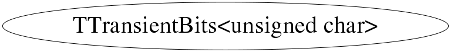

class TTransientBits<unsigned char>
\class TTransientBits Class for storing bits for transient data members
Function Members (Methods)
public:
Class Charts



Function documentation
TTransientBits& operator=(const T& rhs)
\class TTransientBits Class for storing bits for transient data members
